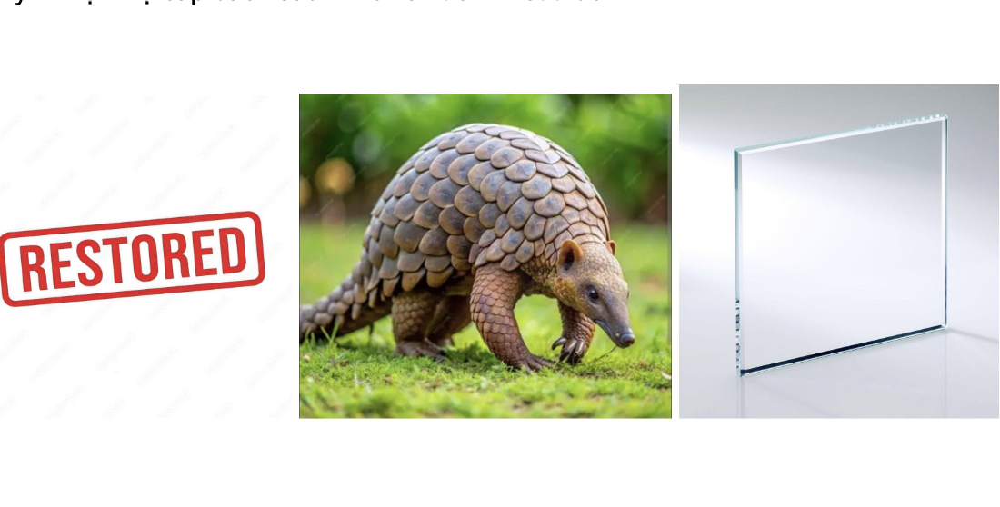

MINI GAME
Nhìn hình
đoán chữ.
Quan sát từng hình và đoán cụm từ gắn với hành trình lịch sử Việt Nam từ 1975 đến 1986.
Bạn đoán được cụm từ nào?
Hình 1 / 6

Xem gợi ý
Gợi ý: Nhiệm vụ cấp bách sau khi chiến tranh kết thúc.